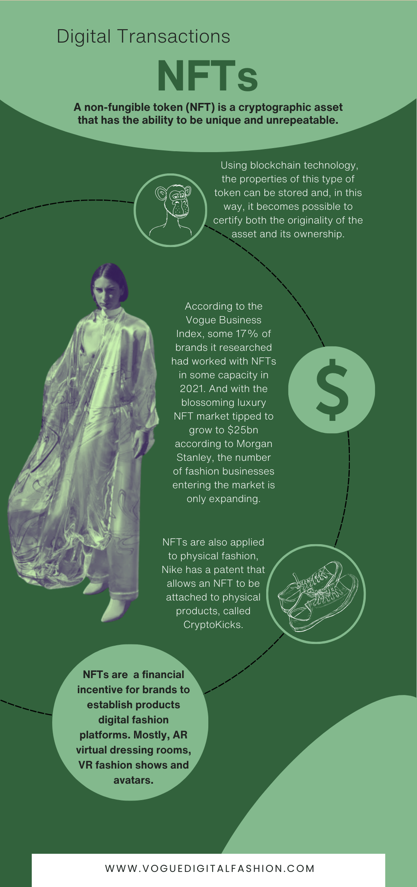
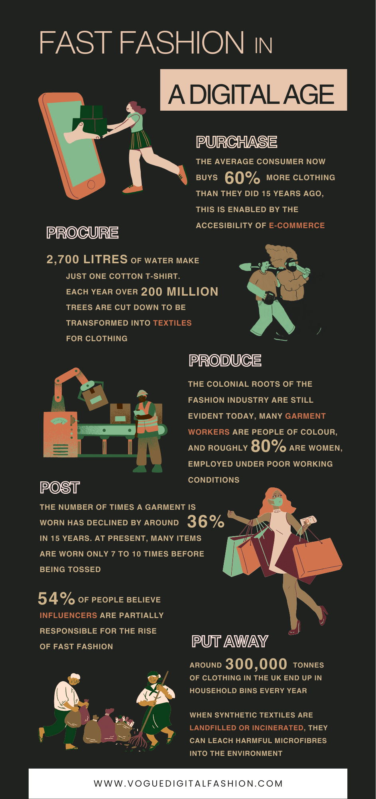

Background
Initial Ideas
Audience
Narrative
Development
Infographics
Prototypes
Moodboard
Multimedia
Images
Audio
Video
Infographics
 
All graphics and formatting were created using Canva.
1: Sources
ILO, Child labour and Textile Production
Virtual Dressing Rooms
Eco-friendly Return Options
Social Media Purchases
Online Shoppers
2: Sources
Vogue Business, Fashion NFTs
Nike Cryptokicks
What is a NFT?
3: Sources
Oxfam, Fast Fashion and Our Climate
Water Waste and Shirt Production
Deforestation and Fast Fashion
Fast Fashion Consumer Habits
Infographic 2: NFTs + digital fashion.
Infographic 1: WHO needs digital fashion.
Infographic 2: FAST FASHION + digital fashion.